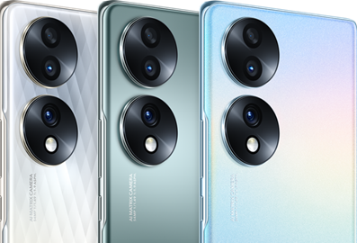
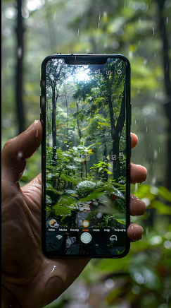
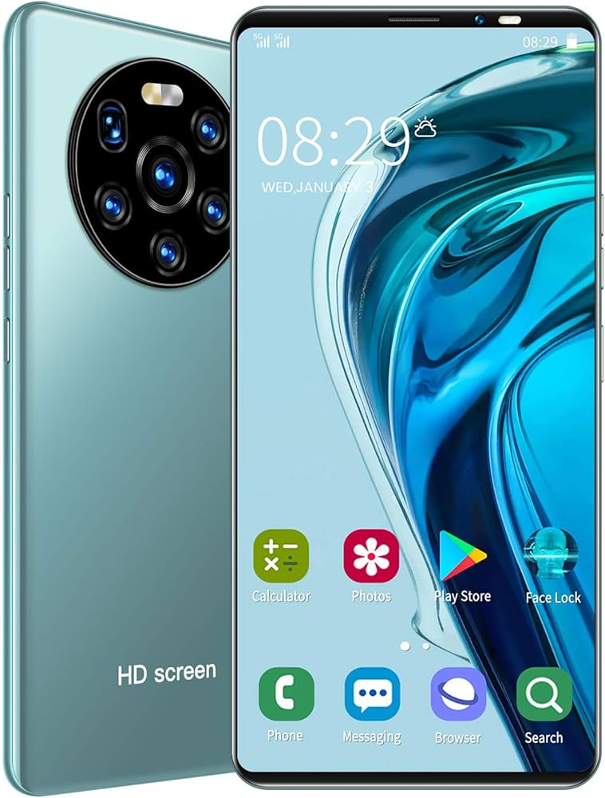

Smartphone DUSK II Pro X
Lanzado el , este dispositivo redefine la potencia.



El procesador más rápido del mercado permite una velocidad de procesamiento un 40% superior a su antecesor.
Detalles del Hardware
Cámara Ultra Vision
Pantalla Dynamic OLED
Ver especificaciones técnicas (Texto)
- Memoria RAM: 16GB
- Almacenamiento: 512GB SSD